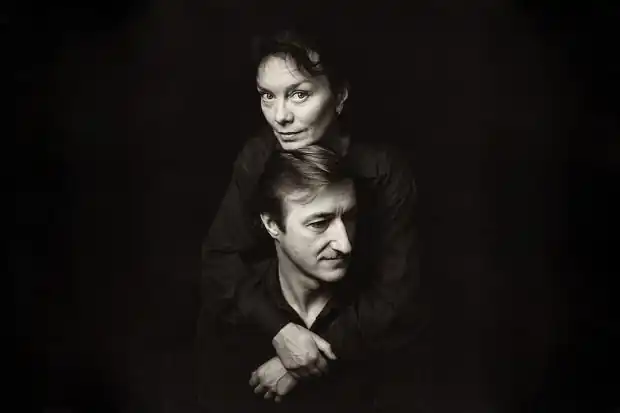

Джуліан Барнс (Julian Barnes)
День народження: 19.01.1946 року
Місце народження: Лестер, Великобританія Громадянство: Великобританія Оригінальна назва: Джуліан Патрік Барнс Письменник-хамелеон Письменник Джуліан Барнс є, мабуть, однією з найскладніших фігур в сучасній англійській літературі. Кожна його книга пізнавана, але всі вони належать різним жанрам — детективні романи, витончені есе, новели про любов, інтелектуальні рецензії, антиутопія — всі ці твори відображають різні аспекти світовідчуття письменника. Барнс тричі потрапляв до шорт-лист Букерівської премії і став її лауреатом; його твори викликали дискусії літературних критиків і ставали сценаріями фільмів. Цікавим є і той факт, що письменник озвучував роль комісара Мегре в радіопостановці ВВС. При цьому всі, хто близько знає Джуліана, стверджують, що в кожній його книзі присутній негативний персонаж, чий характер має багато спільного з самим Барнсом; більш того, шаржований портрет письменника промайнув в знаменитому "Щоденнику Бріджит Джонс ". Джуліан Барнс (Julian Patrick Barnes) з'явився на світ в центральній Англії, в місті Лестер, 19 січня 1968 року, в родині викладачів французької мови. Саме цим пояснюється екстравагантна франкофонії письменника, а також його величезна любов до французької культури та літератури. Через шість тижнів після народження сім'я Барнс оселилася в передмісті Лондона. Майбутній письменник відрізнявся дуже живою уявою і схильністю до фантазій, що не заважало йому з п'яти років бути вболівальником футбольної команди Лестера. Джуліан закінчив школу в лондонському Сіті, потім вступив до Оксфордського університету, де вивчав західноєвропейські мови в коледжі Магдалини. Примітним є той факт, що Барнс непогано знав російську мову, а в 1965 році разом з групою студентів подорожував по СРСР на мікроавтобусі. У 1968 році Джуліан, отримавши диплом з відзнакою, зайнявся філологічними дослідженнями. Як лексикографа він протягом трьох років працював в команді забезпечення Оксфордського словника, потім писав літературні огляду і рецензії для журналів. З 1979 року Барнс вже був відомим критиком, які працювали на телебаченні, але, за його словами, відрізнявся болючою сором'язливістю і повної асоціальністю. Одночасно з критичними статтями Джуліан почав займатися і літературною діяльністю. Пробою пера для нього став детективний жанр. З 1980 по 1987 рік їм було опубліковано чотири книги, підписані псевдонімом "Ден Каван". У 1980 році Барнс також видав і свій перший "серйозний" роман під назвою "Метроленд". Історія молодої людини покоління шістдесятих, розказана у вигляді його подорожі з Лондона в Париж і назад, за словами матері Джуліана, "справила враження бомби"."Метроленд" був нагороджений премією Сомерсета Моема, а згодом екранізований. Наступним гучним успіхом Барнса став роман "Папуга Флобера "(1984), в якому органічно переплелися любов Джуліана до Франції, фантазія художника, літературна критика і власна біографія. Книга потрапила в шорт-лист премії Букера, більш того, з'явилися помилкові публікації про те, що "Папузі Флобер" ця премія була присуджена. Наступним романом Джуліана Барнса, що приніс йому всесвітню популярність, стала антиутопія "Історія світу в десяти з половиною главах" (1989). Цей яскравий зразок постмодерністської прози є серією новел різних стилів про події різних історичних епох, об'єднаних загальною лінією "море-ковчег-чисті-нечисті". Через два роки читачі і критики заговорили про новий літературному прийомі — оповідної техніки роману "Як все було" (1991), в якому відсутня мова "від автора", і герої безпосередньо звертаються до читача. У такому ж стилі було написано і продовження цієї книги "Любов і т.д." (2000), яке також лягло в основу сценарію для фільму. Вдалою спробою входження в літературний мейнстрім був роман "Артур і Джордж" (2005). Стилізоване під Конан Дойля розповідь про розслідування реального кримінального злочину увійшло в список бестселерів і в шорт-лист премії Букера. Хоча книгу все вважали безперечним фаворитом, престижна премія знову обійшла письменника стороною. Удача посміхнулася Барнсу тільки в 2011 році, коли премію Букера отримав його роман "Передчуття кінця "(2011). Ця книга отримала також премію Costa Book і увійшла в список бестселерів. Останнім з творів Барнса, опублікованими на сьогоднішній день, є роман "Рівні життя"(Levels of Life, 2013). В даний час письменник проживає в Лондоні. Він неохоче розповідає про своє особисте життя. Брат Джуліана Барнса, Джонатан — відомий фахівець з античної філософії. Дружина Джуліана, Пет Кавана, яка була колись його літературним агентом, померла в 2008 році; її смерть (без згадки імені) описана в третій частині "Рівнів життя ".